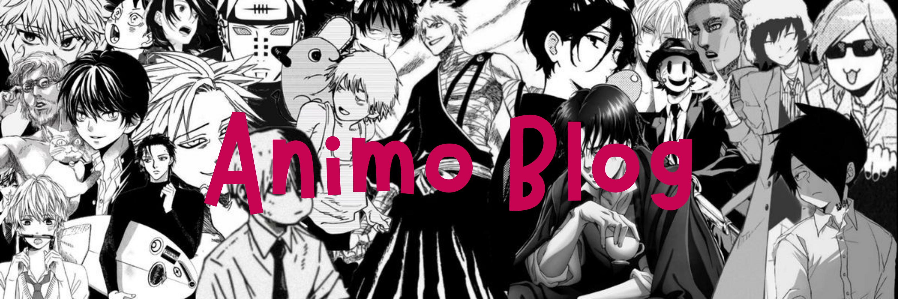

5 Animes de Romance Para Assistir e Se Apaixonar
Conheça cinco títulos de animações japonesas que misturam romance, comédia e drama enquanto acompanham casais!
Aqui você encontrará as últimas notícias e análises sobre animes e mangás. Prepare-se para descobrir os melhores conteúdos!

Conheça cinco títulos de animações japonesas que misturam romance, comédia e drama enquanto acompanham casais!
Conheça os vencedores da temporada de primavera de 2026 nas premiações de anime!
Conheça cinco títulos de animações japonesas que misturam romance, comédia e drama enquanto acompanham casais!